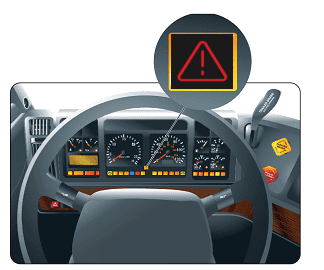

Low Air Warning - Testing Procedure
1. Secure the Truck & Trailer
"The wheels are chocked, both parking brakes are applied, my truck & trailer are secure."
2. Start the engine, state current air pressure
"My current pressure is ___psi"
3. Reduce the Air Pressure
(Pump brake pedal to reduce pressure)
"I will reduce the air pressure, until the low air warning activates."
4. When Low Air Activates
"The low air warning activates at 60psi, which is better than 55psi."

Your browser does not support the video tag.
5. Read Minor & Major Defects
To see video of Low-Air Warning Inspection:
Press Here!
© 2025 VM Truck Academy